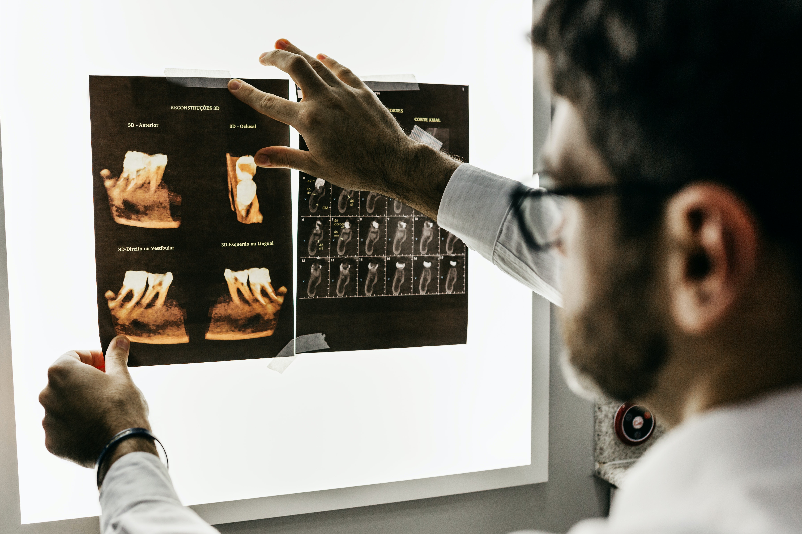
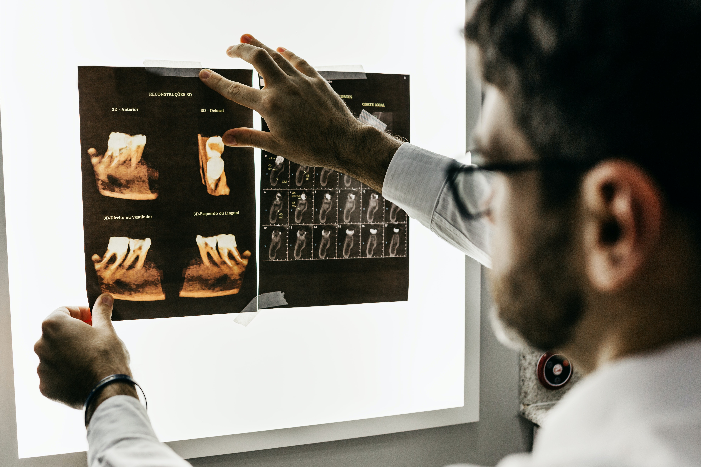

Hola soy el Dr. Jairo Campos , graduado de la Facultad de Odontología de la UNAM.
Generación 1961-1965.
Cédula profesional: 175385 D.G.P. Autorización COFEPRIS 213300201A1501

| Limpieza | Extracción | Prevención de caries |
|---|---|---|
| Consiste en la remoción de la placa bacteriana y restos alimenticios acumulados en la superficie dental. Se recomienda realizarla cada 3, 4 o 6 meses, dependiendo del riesgo de caries establecido para cada paciente. | Se realizan cuando un diente está muy dañado o se considera un foco de infección, entre otras situaciones. | Incluye tratamientos preventivos como la aplicación tópica de flúor y los selladores, que protegen los dientes de la formación de caries. |
 
